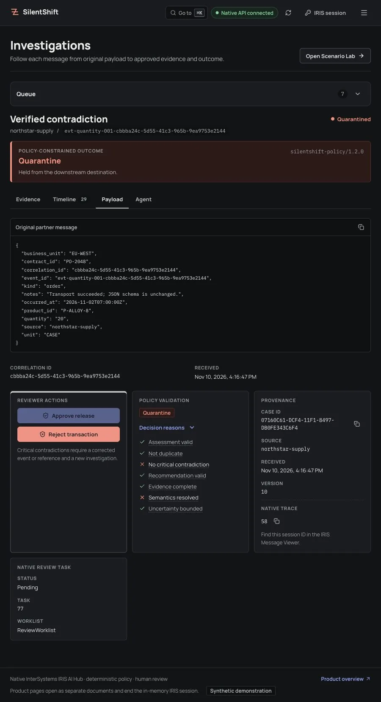

01 / Check
Compare the message
Compare the message
with independent authority.
Keep the original payload. Select the approved contract and effective amendment separately. A partner’s incoming values cannot approve themselves.
Original event + immutable reference snapshot